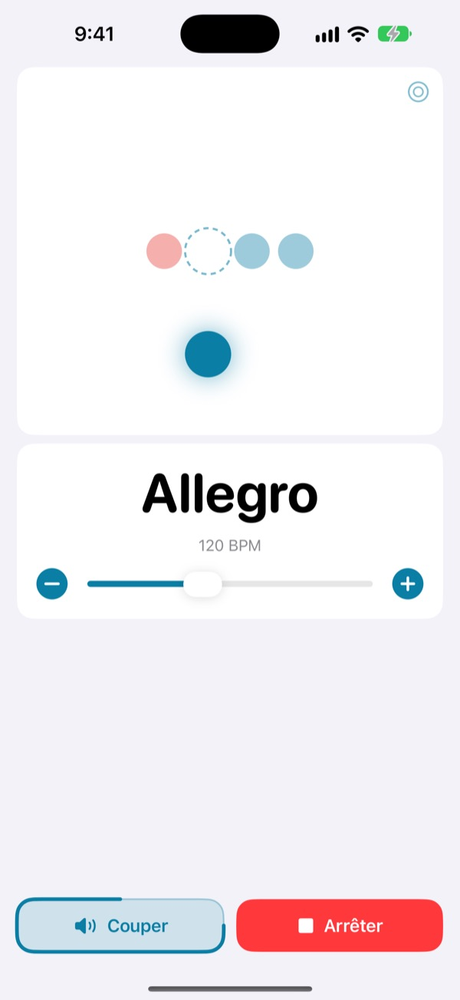
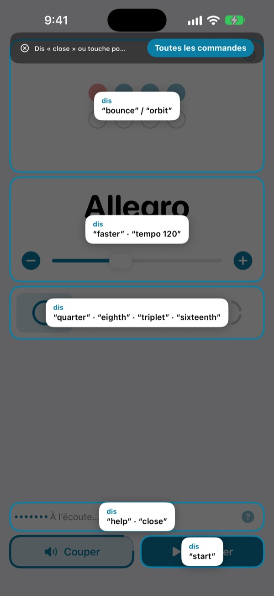
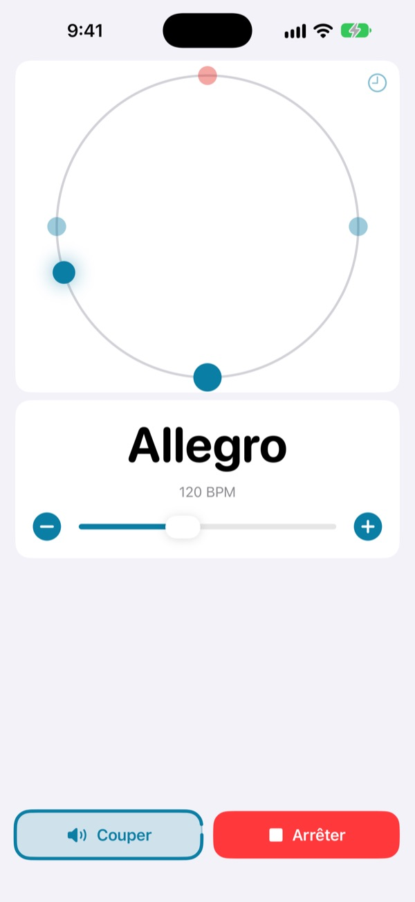
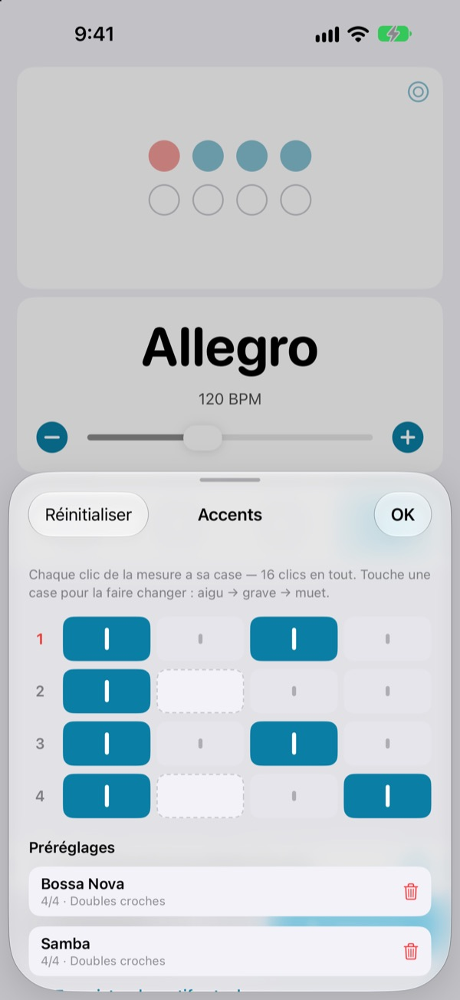

Les mains sur l’instrument,
le tempo à la voix
Dis faster en pleine phrase et le clic accélère. Les commandes sont de petits mots anglais, et tu n’as plus besoin de t’arrêter pour changer le tempo.
Le métronome complet et la commande vocale sont gratuits.

Essaie à voix haute
Touche une phrase, ou active le micro et dis-la en anglais. Monte le son : le clic se fait entendre.
Déjà perdu le groove juste pour retoucher le tempo ?
Tu poses l’archet, tu coinces le médiator entre les dents, tu touches l’écran deux fois, et le feeling que tu venais de trouver s’est envolé. Not My Tempo change le tempo en un seul mot, sans que tu bouges.
Tu le dis, il suit
De petits mots anglais comme start, faster ou tempo 120. L’app écoute dès que tu l’ouvres, sans activer le Contrôle vocal d’iOS ni aucun réglage d’accessibilité.
Une commande t’échappe ? Dis help et tout ce que tu peux dire s’affiche à l’écran.

Le temps se voit aussi
Choisis entre rebond, orbite ou anneau. Le premier temps de la mesure s’affiche en rouge et sonne plus fort.
Tape en rythme sur l’orbite et vois si tu tombes pile.

Les accents de chaque morceau, enregistrés
Règle chaque clic de la mesure en aigu, grave ou muet, puis garde-le en préréglage. Tu montes ton motif de bossa nova ou de samba une fois, et la prochaine fois tu n’as qu’à le choisir. (Pro)

Trois étapes pour commencer
- 1
Ouvre l’app
Elle se met à l’écoute toute seule.
- 2
Autorise le micro
La première fois seulement, elle demande l’accès au micro et à la reconnaissance vocale.
- 3
Parle ou touche
Chaque commande a aussi son bouton à l’écran.
Ce que tu peux dire
- start · stop
- lecture, pause
- faster · slower
- plus ou moins 5 BPM
- up · down
- plus ou moins 1 BPM
- tempo 120
- aller droit au tempo voulu
- double · half
- deux fois plus vite, deux fois moins vite
- three beats
- changer la mesure
- quarter · eighth · triplet · sixteenth
- noires, croches, triolets, doubles croches
- louder · quieter · mute
- clic plus fort, plus doux ou coupé
- volume 60
- régler le volume en pourcentage
- bounce · orbit
- changer la vue des temps
- timer 5 minutes
- lancer un minuteur de travail
- practice
- faire monter le tempo pendant le travail (Pro)
- tune
- ouvrir l’accordeur (Pro)
- help
- afficher toutes les commandes
- close · done
- fermer un panneau
La reconnaissance vocale fonctionne en anglais américain : les commandes se disent donc en anglais. Le reste de l’app est en français, et tout marche aussi en touchant l’écran.
Le métronome est gratuit. Pro, quand tu veux aller plus loin.
Gratuit
- Toutes les commandes vocales
- Mesures de 1 à 8 temps, premier temps marqué
- Subdivisions en noires, croches, triolets et doubles croches
- Vues rebond, orbite et anneau
- Tap tempo et test de précision
- Minuteur de travail
Not My Tempo Pro
- Mode entraînement : le tempo monte de quelques BPM toutes les X mesures, jusqu’à ton objectif
- Éditeur d’accents avec préréglages par morceau
- Accordeur chromatique
Abonnement annuel avec essai gratuit, ou achat unique à vie
La commande vocale et les fonctions d’accessibilité restent gratuites pour tout le monde. Tu as acheté l’app avant l’arrivée de Pro ? Toutes les fonctions Pro sont déjà à toi.
Questions fréquentes
Je peux lui parler en français ?
La reconnaissance vocale fonctionne en anglais américain, donc les commandes sont de petits mots anglais comme start ou faster. On les retient vite, et chaque commande a aussi son bouton à l’écran.
L’app ne m’entend pas.
Vérifie que l’état du micro indique À l’écoute. Si l’écoute est coupée, touche Écoute. Dans une pièce bruyante ou avec des haut-parleurs à fond, mets des écouteurs pour que le clic ne repasse pas dans le micro.
L’écoute s’est coupée toute seule.
Pour économiser la batterie, l’écoute se coupe après quelques minutes sans commande. Touche Écoute pour la réactiver.
Le tempo est deux fois trop lent ou trop rapide.
Dis double ou half pour le corriger.
Comment utiliser l’accordeur ?
Dis tune ou touche le bouton en forme d’onde sur la carte du tempo. Joue une note : quand l’indicateur tombe dans la zone verte, tu es juste. Dis close pour quitter.
J’utilise déjà le Contrôle vocal d’iOS.
Coupe le micro de l’app et pilote-la par le nom des boutons. Toutes les commandes ont un libellé VoiceOver.
Ma voix est-elle envoyée quelque part ?
Non. La voix est reconnue directement sur l’appareil, sans jamais être enregistrée, stockée ni envoyée. Le métronome, la commande vocale et l’accordeur fonctionnent hors connexion.
Comment résilier l’abonnement ?
Dans Réglages > Compte Apple > Abonnements. L’abonnement annuel se renouvelle automatiquement, sauf résiliation au moins 24 heures avant la fin de la période en cours. L’achat à vie est facturé une seule fois.
Une question, une remarque ? Écris à leeo@kakao.com.